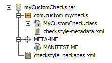

-- Using custom checks --
One great feature of Checkstyle is its extentablity. You can easily write own checks as
explained here .
Once you have written your check you surely want to use them with the plug-in.
There are a few steps you must take to accomplish this:
-
Write your custom checks and prepare to package them into a .jar file
-
(Optional) Create a Checkstyle packages definition file named checkstyle_packages.xml. This file must be packaged
directly into the root of your jar.
In doing so you are able to define your
checks in your configuration file using the logical check name - instead of
needing to provide the fully qualified class name of your check.
For more
info about the checkstyle packages files please read here: http://checkstyle.sourceforge.net/config.html#Packages .
Contrary
to what the referenced documentations says you don't need to include the
standard checkstyle packages in your checkstyle_packages.xml file.
-
(Optional) Provide metadata for your custom checks.
By providing metadata
your checks will facilitate the full capabilities of the plug-ins configuration
editor - this means you will be able to configure them using the plug-in's
configuration editor just like the standard checkstyle modules.
To define
the metadata you need to write a file named checkstyle-metadata.xml which is to be placed into the package (or
packages) your check classed lie in.
In order to let the plug-in find your metadata you need to declare the
package within the custom checkstyle_packages.xml file (see point 2).
The structure of the metadata is explained here .
The metadata file
must adhere to this dtd: http://eclipse-cs.sourceforge.net/dtds/checkstyle-metadata_1_0.dtd .
So it would be a good idea to include this document type declaration to
your metadata file:
<!DOCTYPE checkstyle-metadata PUBLIC
"-//eclipse-cs//DTD Check Metadata 1.0//EN"
"http://eclipse-cs.sourceforge.net/dtds/checkstyle-metadata_1_0.dtd">
This way you can validate your metadata file against the dtd using your preferred
XML editor before packaging it into your custom .jar.
Please see the dtd as a reference for the structure, meaning and features the metadata can
possibly provide.
For further examples for metadata files and pointers how
to achieve on or another feature please see the metadata inside the CheckstyleMetadata.jar inside the plug-in
directory.
-
Finally package your .jar file together.
Go
to <path-to-my-eclipse>/plug-ins/com.atlassw.tools.eclipse.checkstyle_x.x.x
directory and copy the .jar into the extension-libraries directory
-
Either restart eclipse or hit the  button within the plug-ins preference page to let the plug-in pick
up the changes. button within the plug-ins preference page to let the plug-in pick
up the changes.
If you were successful in creating and deploying your
custom metadata your checks will show up in the configuration editor- like the
build-in checks.
-
If you provided custom metadata for your checks you will be able to fully
configure them using the plug-in's configuration editor. If you did not provide
custom metadata some limitations in the configuration editor will apply:
-
You cannot add your custom checks via the configuration editor, because
your checks are not known to the plugin.
This means you need to
write your checkstyle configuration file by hand using a text editor. Be
sure to include all properties of your modules within the module
configuration so you can at least edit the properties afterwards in the
Checkstyle Plug-in Configuration Editor.
-
If you remove your custom checks from the configuration using the
configuration editor you cannot re-add them using the configuration
editor.
-
Your hand added custom checks will show up in the Other section of
the configuration editor.
Example:
Structure of a custom check jar:

Content of the checkstyle_packages.xml file in this case:
<?xml version="1.0"
encoding="UTF-8"?> <!DOCTYPE checkstyle-packages PUBLIC
"-//Puppy Crawl//DTD Package Names 1.0//EN"
"http://www.puppycrawl.com/dtds/packages_1_0.dtd">
<checkstyle-packages> <package
name="com.custom.mychecks"/>
</checkstyle-packages>
|